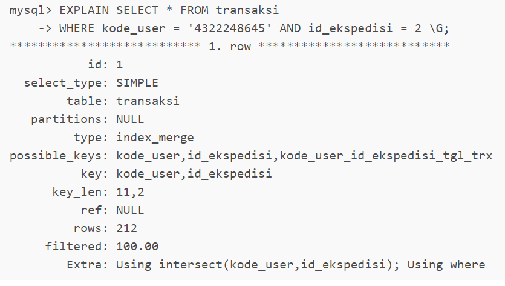
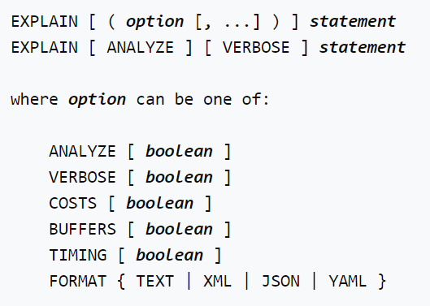
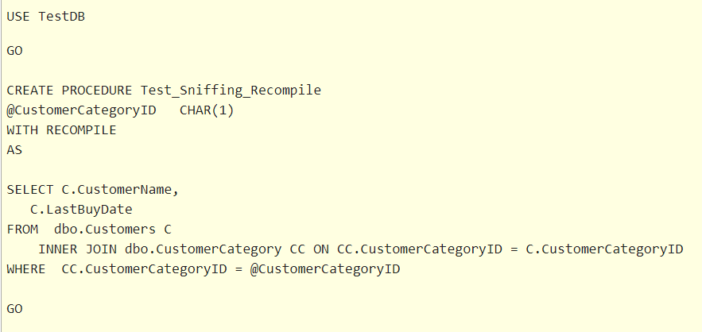
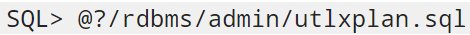
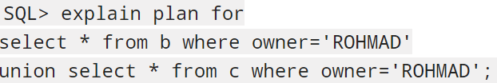
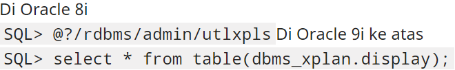

..
MySQL
Ketika mengeksekusi suatu query, MySQL menyusun rencana apa saja yang akan dilakukan untuk mengeksekusi query tersbut. Rencana ini tertuang dalam Query Execution Plan (QEP). Dengan membaca QEP tersebut kita dapat menganalisa efektifitas suatu query. QEP ini dapat kita lihat dengan menggunakan statement Explain, misal:
QEP ini menyajikan informasi detail baik untuk query sederhana maupun query yang kompleks yang melibatkan banyak tabel. Dengan mempelajari dan memahami setiap bagian dari QEP ini, kita dapat menganalisa bagian query mana yang perlu untuk dioptimasi.
Mengoptimalkan Query dengan EXPLAIN
Pernyataan EXPLAIN memberikan informasi tentang bagaimana MySQL menjalankan pernyataan:
- EXPLAIN bekerja dengan pernyataan SELECT, DELETE, INSERT, REPLACE, dan UPDATE.
- Ketika EXPLAIN digunakan dengan pernyataan yang dapat dijelaskan, MySQL menampilkan informasi dari pengoptimal tentang rencana eksekusi pernyataan. Artinya, MySQL menjelaskan cara memproses pernyataan tersebut, termasuk informasi tentang bagaimana tabel digabungkan dan dalam urutan yang mana
- Ketika EXPLAIN digunakan dengan FOR CONNECTION connection_id daripada pernyataan yang dapat dijelaskan, ini akan menampilkan rencana eksekusi untuk pernyataan yang dieksekusi dalam koneksi bernama
- Untuk pernyataan SELECT, EXPLAIN menghasilkan informasi rencana eksekusi tambahan yang dapat ditampilkan menggunakan SHOW WARNINGS.
- EXPLAIN berguna untuk memeriksa kueri yang melibatkan tabel yang dipartisi
- Opsi FORMAT dapat digunakan untuk memilih format keluaran. TRADISIONAL menyajikan keluaran dalam format tabel. Ini adalah default jika tidak ada opsi FORMAT. Format JSON menampilkan informasi dalam format JSON.
Dengan bantuan EXPLAIN, Anda dapat melihat di mana Anda harus menambahkan indeks ke tabel sehingga pernyataan tersebut dieksekusi lebih cepat dengan menggunakan indeks untuk menemukan baris. Anda juga dapat menggunakan EXPLAIN untuk memeriksa apakah pengoptimal menggabungkan tabel dalam urutan yang optimal. Untuk memberi petunjuk kepada pengoptimal agar menggunakan perintah gabungan yang sesuai dengan urutan di mana tabel diberi nama dalam pernyataan SELECT, mulailah pernyataan tersebut dengan SELECT STRAIGHT_JOIN daripada hanya dengan SELECT. Namun, STRAIGHT_JOIN dapat mencegah penggunaan indeks karena menonaktifkan transformasi semijoin.
PostgreSQL

Perintah ini menampilkan rencana eksekusi yang dibuat oleh perencana PostgreSQL untuk pernyataan yang disediakan. Rencana eksekusi menunjukkan bagaimana tabel yang direferensikan oleh pernyataan akan dipindai - dengan pemindaian sekuensial biasa, pemindaian indeks, dll. - dan jika beberapa tabel direferensikan, algoritme gabungan apa yang akan digunakan untuk menyatukan baris yang diperlukan dari masing-masing tabel masukan.\

Bagian paling penting dari tampilan adalah perkiraan biaya eksekusi pernyataan, yang merupakan tebakan perencana berapa lama waktu yang dibutuhkan untuk menjalankan pernyataan (diukur dalam unit biaya yang sewenang-wenang, tetapi secara konvensional pengambilan halaman disk yang berarti). Sebenarnya ada dua angka yang ditampilkan: biaya awal sebelum baris pertama dapat dikembalikan, dan biaya total untuk mengembalikan semua baris. Untuk sebagian besar kueri, biaya total adalah yang terpenting, tetapi dalam konteks seperti subkueri di EXISTS, perencana akan memilih biaya permulaan terkecil daripada total biaya terkecil (karena pelaksana akan berhenti setelah mendapatkan satu baris). Juga, jika Anda membatasi jumlah baris untuk dikembalikan dengan klausa LIMIT, perencana membuat interpolasi yang sesuai antara biaya titik akhir untuk memperkirakan paket mana yang benar-benar termurah.
Opsi ANALYZE menyebabkan pernyataan benar-benar dieksekusi, tidak hanya direncanakan. Kemudian statistik run time aktual ditambahkan ke tampilan, termasuk total waktu berlalu yang dihabiskan dalam setiap node rencana (dalam milidetik) dan jumlah total baris yang sebenarnya dikembalikan. Ini berguna untuk melihat apakah perkiraan perencana mendekati kenyataan.
SQL Server

Cara SQL Server memilih plan terbaik adalah dengan menghitung cost estimation. Sebagai contoh, jika saya meminta Anda untuk menentukan yang mana yang merupakan plan yang terbaik, pertama indeks seek diikuti oleh key lookup atau kedua table scan., Anda mungkin akan menjawab yang pertama, tetapi itu tergantung pada jumlah data yang dikembalikan oleh query. Dengan kata lain itu tergantung pada jumlah data yang diambil. Jadi, query plan terbaik mempertimbangkan cardinality estimation berdasarkan input parameters dan dengan bantuan statistik
Ketika optimizer membuat execution plan, ia melakukan parameter sniffing untuk mengetahui nilai-nilai parameternya. Ini bukan masalah; sebenarnya diperlukan untuk membuat plan yang terbaik. Masalah muncul ketika query menggunakan plan yang dibuat sebelumnya yang dioptimalkan untuk distribusi data yang berbeda
Workarounds untuk SQL Server Parameter Sniffing =>
- Buat Stored Procedures menggunakan Opsi WITH RECOMPILE
- Gunakan Hint OPTION (RECOMPILE)
- Gunakan Hint OPTION (OPTIMIZE FOR)
- Gunakan Dummy Variables pada Stored Procedures
- Nonaktifkan Parameter Sniffing pada Tingkat Instance
- Nonaktifkan Parameter Sniffing untuk Query tertentu
Contohnya untuk Buat Stored Procedures menggunakan Opsi WITH RECOMPILE:
Oracle
Suatu proses (query) sebelum dijalankan, database Oracle menentukan dulu mana langkah-langkah yang paling optimal (efektif dan efesien) yang akan dipilih. Contoh query yang melibatkan 5 tabel, paling tidak ada 1×2×3×4×5 pilihan langkah (execution plan) tabel-table mana yang akan di-joint terlebih dahulu. Urutan join tentu saja menentukan resource (cost) yang akan dipakai. Untuk database dengan query yang kecil, tuning query dengan explain plan mungkin tidak begitu kelihatan manfaatnya. Namun untuk query yang melibatkan data besar-besaran, akan benar-benar terasa.
Sebelum menjalankan query, kita bisa melihat “execution plan” mana yang akan dipilih oleh Oracle. Caranya adalah dengan menjalankan “explain plan”. Untuk dapat memanfaatkan feature explain plan ini, berikut langkah-langkahnya:
- Pastikan bahwa instance parameter OPTIMIZER_MODE tidak sama dengan RULE. (Pilihan value untuk OPTIMIZER_MODE adalah rule, choose, all_rows, first_rows , first_rows_n). Kalau nilainya RULE, maka Oracle tidak akan menentukan execution plan berdasarkan cost-nya, tapi berdasarkan aturan (rule) default-nya Oracle.
- Jalankan script utlxplan.sql untuk membuat table plan. Ini dijalankan satu kali saja oleh user yang akan melakukan Explain Plan. 
- Berikut ini contoh command untuk membuat plan dari suatu query 
- Setelah itu, lihat execution plan-nya 